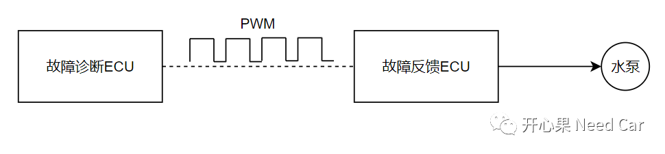
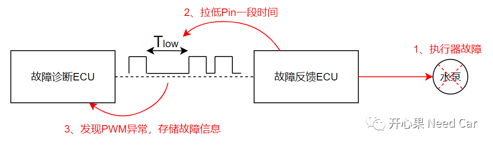
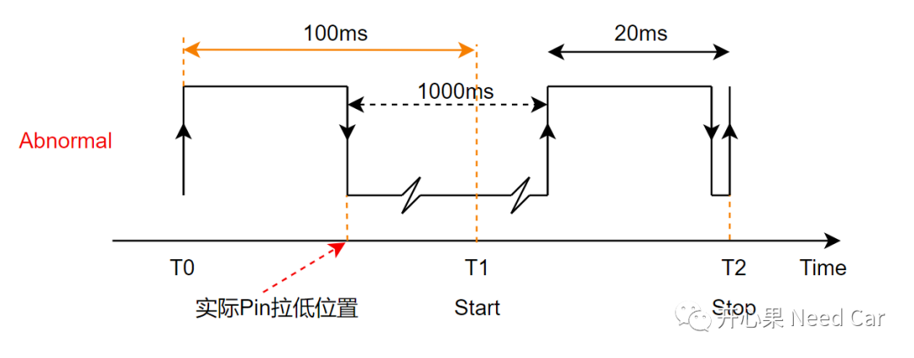
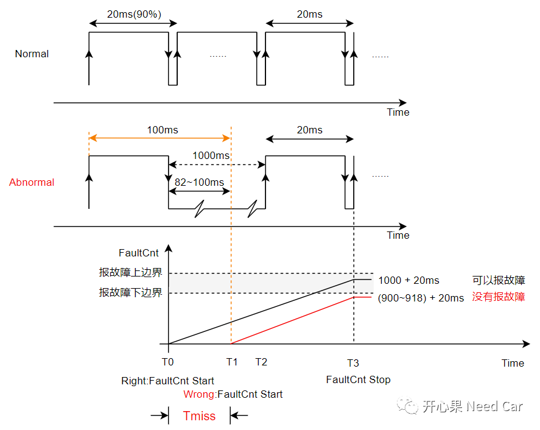

整车开发中，诊断功能是不可或缺的一部分。良好的诊断功能可以及时检测出车辆安全隐患，同时给驾驶员一些必要的安全提示（eg：指示灯或者文言提示），以便于驾驶员及时规避危险。如果车辆出现了潜在的安全隐患，诊断结果也应及时反馈到功能抑制单元，进行必要的功能降级，进而最大限度地保证驾/乘人员的人身安全。所以，诊断功能的可靠性至关重要。
本文分享一个工程问题：执行器失效，PWM诊断功能鲁棒性不够，导致故障报不出的问题。
（一）PWM诊断原理
执行器的运行工况，通过PWM监控，具体监控策略如下：

首先，故障诊断ECU会按照一定的占空比发送PWM（eg：50Hz，50%占空比）。如果故障反馈ECU控制的执行器（eg：水泵）运行状态良好，PWM的发送和接收均正常；
其次，如果执行器故障，故障反馈ECU会主动拉低PWM对应的Pin脚一段时间（Tlow，eg：1000ms）,破坏正常的PWM波形，当故障诊断ECU识别到PWM波形异常时，会将对应的故障信息存储，也可能给出故障提示，告知驾驶员车辆存在安全隐患。示意如下：

故障反馈ECU检测到执行器故障，并执行了Pin拉低动作，且拉低时间Tlow满足故障诊断要求（eg：1000ms），但是，故障诊断ECU并未将故障报出，也未有给出故障提示。
故障诊断ECU未将故障信息报出，说明其没有满足设计的故障触发条件。而故障的触发条件没有满足，需要进一步确认故障的监测条件，所以，问题的源头需要从这个故障监测条件开始。
信息补充：故障诊断ECU输出的PWM有效频率为50~500Hz，也就意味着PWM周期在2~20ms范围内。
以20ms周期的PWM为例。软件层面，故障计算的起点：从第一个PWM上升沿开始（T0时刻），100ms内没有检测到第二个上升沿开始计算故障时间，即：延迟的100ms时间点（T1时刻）作为故障发生的起点，直到程序再次监测到一个完整的PWM周期停止，这段时间认为是故障反馈ECU拉低Pin的时间（Tlow = T2-T1）。

如果Tlow拉低时间在有效的范围内，故障诊断ECU会将此故障信息存储，且给出故障提示。如果Tlow时间不在有效范围内，则忽略，认为故障反馈ECU信息输出有误。所以，故障诊断ECU没有将实际的故障报出，说明其计算出的Tlow时间不在有效范围内，Tlow时间计算偏差如何产生的呢？假设：Tlow范围在950ms（报故障下边界）~1050ms（报故障上边界）范围内有效，PWM周期20ms，占空比90%。按照如上的故障监测条件分析如下：
1、故障反馈ECU发现执行器故障以后，在T0时刻拉低PWM Pin。所以，故障诊断ECU实际应该将T0时刻作为故障监控的起点。而实际故障诊断ECU需要延时100ms，将T1时刻作为故障监控的起点；2、按照约定，故障反馈ECU拉低1000ms后停止拉低PWM Pin，T2时刻，故障诊断ECU继续正常输出PWM；
3、在T3时刻，故障诊断ECU识别到一个完整的PWM波形，停止故障监控计算。
4、如上可以看出，故障诊断ECU计算的 Tlow = T3 - T1，范围在920~938ms，不在故障上报的有效范围内，因此，故障诊断ECU无法将故障报出。实际 Tlow = T3 - T0 =1020ms，如此，故障诊断ECU才能将故障报出。如上，大家可能会疑惑一个点：为什么故障诊断ECU要延迟100ms开始计算呢？答：本问题中，认为低于10Hz的PWM没有频率，其频率等价为0，10Hz对应100ms周期，故而延迟100ms开始故障计算。如上，还有一点需要考虑：计算Tlow所在的任务周期，此周期不能过大，不然会降低计算精度。而且，Task本身在运行过程中，存在一定的抖动误差。既然问题出在Tlow计算偏差，解决措施也相对比较明确，增加一个偏移值（Offset），补偿计算所带来的偏差，比如：40ms。
点击下方关注，一起聊聊Autosar/嵌入式，如果需要，联系作者进群，给你更专业的解答